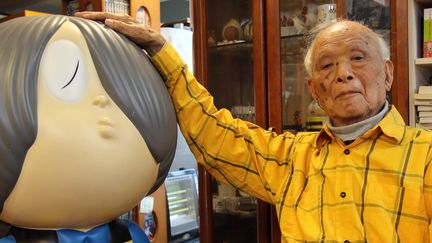

Shigeru Mizuki
Mangaka
Shigeru Mura, connu sous le nom de plume Shigeru Mizuki, est un mangaka japonais. Il est un des grands fondateurs du manga d'horreur, se spécialisant dans les histoires de monstres et de fantômes japonais, avec des créatures telles que yōkai, tengu et kappa.
“Un seul instant dure toute l'éternité, et l'éternité n'est qu'un instant.”